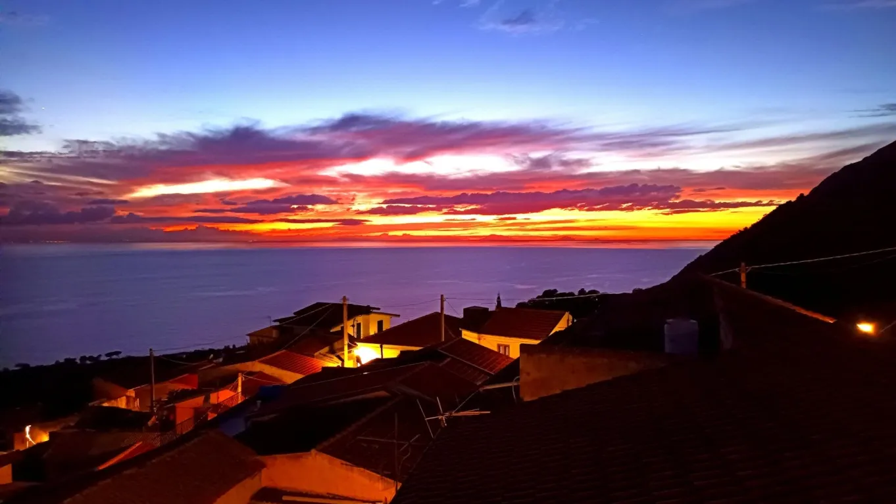
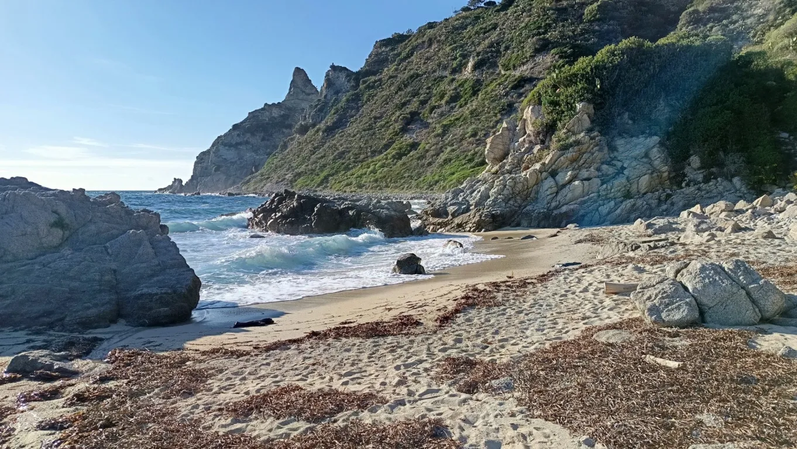

Kalabrien ist nicht die Toskana.
Casa Joppolo: zwei Wohnungen und ein altes Dorfhaus hoch über dem Tyrrhenischen Meer, an der Costa degli Dei. Für Auszeiten von ein paar Wochen bis zu ein paar Monaten. In der Anfangszeit vor allem für Freunde.

Hundert Höhenmeter über dem Bahnhof, dreihundert Meter vom Supermarkt, sechzehnhundert Kilometer südlich von Berlin. Zwei Flughäfen in Reichweite. 5G statt WLAN.
Ein etwas vergessener Ort an der Götterküste.
Joppolo liegt in der Mitte der Südwestküste der Costa degli Dei, der Götterküste, in einer wilden, grünen Landschaft, in der alles zu gedeihen scheint. Perfekt zur Sonne ausgerichtet, mit Blick auf die Stiefelspitze, Sizilien und die Liparischen Inseln.
Wegen des Felsbrockenstrandes ist der Ort deutlich weniger touristisch als die Nordwestküste zwischen Capo Vaticano und Pizzo mit ihren Sandbuchten. Dafür gibt es hier noch eine starke lokale Gemeinschaft: Auf der Straße grüßt man sich, ein „Ciao“ oder „Salve“ und ein paar Worte zum Wetter gehören dazu. Dazu Norditaliener mit Ferienhäusern, Argentinier mit italienischen Wurzeln, die zurückkommen, und die Anfänge einer kleinen deutschen Community.
Und ja, Kalabrien ist nicht die Toskana. In und um Joppolo gehören Bauruinen, Müllablagerungen und marode Infrastruktur zum Bild. Dazwischen spektakuläre Landschaft, verwunschene Orte, tolle Strände und jede Menge Lost Places. Wer Perfektion sucht, ist hier falsch. Wer Potenzial sieht, richtig.
In den Vatikanischen Museen ist Joppolo auf alten Karten als „Geopoli“ eingezeichnet. Das Internet weiß praktisch nichts über den Ort. Vielleicht gibt es da noch etwas zu entdecken.


Ora di Gibuti. Süditalien liegt weit östlich in der mitteleuropäischen Zeitzone, im Winter wird es schon um 17 Uhr dunkel. Tims Trick: die Armbanduhr zwei Stunden vorstellen und so tun, als wäre man in der Zeitzone von Dschibuti. Dann wird es um 8 hell und um 19 dunkel. Für Züge und Verabredungen zeigt das Handy weiter die normale Zeit.
Zwei Ebenen, ein Dorfhaus, eine Dachterrasse.
Das Stadthaus, 2024 gekauft, hat zwei Ebenen, die getrennt genutzt werden. Nebenan steht seit 2025 das alte Dorfhaus. Drei Namen, drei Charaktere.
Bellevue. Die obere Wohnung, an der Via Roma. Heißt so wegen des Panoramas: Golf von Gioia Tauro, Sizilien, die Liparischen Inseln. Oben drauf die Dachterrasse mit provisorischer Pergola, Sonnensegel und Hängematte. Die Möblierung dort ist noch nicht abgeschlossen, Ideen willkommen.
Loft. Die untere Ebene an der ehemaligen Via Borgo, heute Traversa di Largo Lanzari. Getauft wegen der hohen Räume und der großen Wohnküche. Auch hier Meerblick. Das Loft wird ab und zu für längere Auszeiten und Workation vermietet, mehr dazu unten.
Rustico. Das etwas verfallene alte Haus direkt nebenan, 2025 dazugekauft. Wegen seiner Ursprünglichkeit so getauft. Dient als Gästezimmer, Werkstatt und Lager, und für künftige Renovierungsträume.

C’è. Eine Dachterrasse mit Panorama. Deckenventilatoren in allen Aufenthaltsräumen, Stufe 5 ist die langsamste. Eine kleine Gaszentralheizung, nicht perfekt, im Winter warme Kleidung einpacken. Die komplette Ausstattung: Bettwäsche, Handtücher, Decken, Badeschuhe, Schnorchel, Strandschirm, Regenschirme, Yogamatten, Einkaufstaschen. Waschmaschine und Spülmaschine. Ein Wassertank auf dem Dach für die Tage, an denen das Leitungswasser ausfällt. Und Quellwasser oben am Platz, der abendliche Gang mit den Flaschen hat Kultfaktor.
Non c’è. WLAN. 5G und Hotspot übers Handy funktionieren wunderbar, auch für Videokonferenzen. Keine Klimaanlage, ein Splitgerät pro Etage ist in Planung, bis dahin Ventilatoren, Rollläden, Fensterläden. Kein Reinigungsservice, man hinterlässt die Wohnung so, wie man sie selbst gern vorfinden will. Nicht mehr als drei Kilowatt Strom, also nicht alle Stromfresser gleichzeitig. Kein Fernseher, eine kleine Bluetooth-Box gibt es, ein Beamer ist geplant. Kein Sandstrand vor der Tür, sondern Felsbrocken und Badeschuhe, die Sandstrände liegen in Nicotera Marina und am Capo Vaticano. Und kein Weg für Rollkoffer: hundert Höhenmeter vom Bahnhof, Rucksack.


Auszeit mit Blick aufs Mittelmeer.
Das Loft ist die untere Wohnung: 50 Quadratmeter, zwei Zimmer, hohe Räume, eine große Wohnküche mit Küchenblock und ein Schreibtisch am Fenster, hinter dem das Meer anfängt. Gedacht für Aufenthalte von etwa drei Monaten: Workation, Sprachaufenthalt, ein Projekt, eine Auszeit.
Möbliert und komplett eingerichtet, mit Boxspringbett, Deckenventilatoren, Zentralheizung, Waschmaschine und einem Bad mit Dusche und Wanne. Das zweite Zimmer ist Arbeitszimmer, Gästezimmer oder beides. Internet über 5G und das eigene Handy.
Verfügbarkeit, Miete und Nebenkosten stehen im aktuellen Inserat, dort geht auch die Anfrage am einfachsten. Im Inserat vom Oktober 2026 steht: drei Monate, April bis Juni 2027. Inserate ändern sich, der Link bleibt.


In der Anfangszeit: für Freunde.
Das Haus ist in erster Linie für die Vermietung bei mehrmonatigen Aufenthalten und für Sharing-Modelle gedacht. In der Anfangszeit steht es aber vor allem Freunden offen, um das Haus und den Ort zu etablieren.
„Joppolo for Friends“ heißt das. Nach einem Jahr waren 33 Leute da, 13 davon mehrfach. Zwei haben inzwischen selbst ein Haus mit Meerblick im Borgo gekauft. Wer eingeladen ist, bringt sich ein, wenn er mag: beim Kochen, Einkaufen, Handwerken, Blumengießen, Müllaufsammeln. Vor allem aber soll er den Urlaub genießen.
Einen Reinigungsservice gibt es nicht, dafür eine Checkliste und die Bitte, die Wohnung so zu hinterlassen, wie man sie selbst gern vorfinden will. Wer dazugehört, kennt den Kalender. Wer nicht, fragt Tim.
Video, März 2026. Bellevue, Loft, Rustico. Die Videos liegen bei YouTube, erst beim Klick werden dort Daten übertragen.

Ohne Auto, mit Kondition.
Joppolo liegt etwa in der Mitte zwischen den Flughäfen Lamezia Terme und Reggio Calabria. Beide sind Endpunkte der Bahnlinie, die an der Küste entlang in Joppolo hält. Ein Auto braucht man nicht, dafür gute Beine.
In aereo. Ryanair fliegt seit 2024 die drei kalabrischen Flughäfen Lamezia Terme, Reggio Calabria und Crotone an, oft zu sehr günstigen Preisen. Von Lamezia und Reggio fahren Busse zum jeweiligen Hauptbahnhof.
In treno. Der Regionalzug hält an der Stazione di Joppolo: im Winter sieben bis neun Züge am Tag, im Sommer zwölf, samstags etwas weniger, sonntags sehr wenige. Fahrpläne und Tickets wie zu Hause im DB Navigator oder bei Trenitalia. Von Deutschland aus: Nachtzug von München nach Rom oder Eurocity nach Bologna, dann mit Frecciarossa oder Italo in den Süden und in Rosarno, 17 Kilometer von Joppolo, oder in Lamezia Terme in den Regionalzug. Italo-Züge gibt es nur auf der Italo-Website.
A piedi. Vom Bahnhof zum Haus sind es 15 bis 20 Minuten bergauf, zurück 12 bis 15. Hundert Höhenmeter auf einem kleinen Weg, nicht rollkoffergeeignet. Der schönste Teil der Anreise.
In macchina. Durchgehend Autobahn ohne Fähre, ab Salerno mautfrei. Abfahrt Rosarno, dann 20 Minuten Küstenstraße. Nötig ist das Auto nicht, nur schön fürs Hinterland. Mietwagen gibt es auch in Ricadi, Santa Domenica und Tropea.
Die Küstenbahn, schematisch, nicht maßstäblich.
Strände, Lost Places und bei klarer Sicht der Ätna.
Vom Haus aus liegen einem das Villenviertel von Joppolo und das glitzernde Tyrrhenische Meer zu Füßen.
Im Osten der weiße Streifen des Sandstrands von Nicotera Marina, dann die nachts hell erleuchteten Kräne des Containerhafens von Gioia Tauro und das bis zu 2.000 Meter hohe Aspromonte. Durch die Straße von Messina kann man direkt hindurchschauen, nachts blinkt dort ein rotes Leuchtfeuer. Im Westen die Liparischen Inseln, und bei sehr guter Sicht hinter den sizilianischen Bergen der 110 Kilometer entfernte Ätna. Nur den Stromboli muss man sich unten am Lungomare anschauen, vom Haus aus versteckt er sich hinter dem Bergrücken.
A piedi. Der ausgeschilderte Wanderweg Mare e Monti führt fast am Haus vorbei, vom Meer bis zur Wallfahrtskirche oberhalb von Caroniti. Spektakulär ist der Höhenweg von Caroniti zum Aussichtspunkt Richtung Capo Vaticano, oder die Wanderung am Meer entlang nach Nicotera Marina. Abenteuerlich und wildromantisch: die Schlucht östlich von Calafoniti.
In acqua. In Joppolo badet man an den Enden des Lungomare: in der kleinen Felsbucht Spelonga im Westen oder bei den wilden Felsen unterhalb des Torre im Osten, Badeschuhe empfohlen. Der versteckte kleine Sandstrand Tirijiu in einer Bucht vor Coccorino ist ein Geheimtipp. Rund um das Capo Vaticano liegen die großen Traumstrände, Grotticelle außerhalb der Saison menschenleer. Nicotera Marina hat einen kilometerlangen Strand mit karibischem Flair.
In treno. Tropea, die „Perle Kalabriens“. Capo Vaticano, Pizzo, Nicotera. Scilla mit Skylla und Charybdis aus der Odyssee. Reggio Calabria mit dem Lungomare unter riesigen Ficusbäumen. Messina mit der Fähre ab Villa San Giovanni. Alles ohne Auto, mit etwas Zeit und Flexibilität, am besten unter der Woche.
In macchina. Lohnt sich vor allem fürs Hinterland: Vibo Valentia mit Altstadt und Burg, das Künstlerdorf Motta, die Grotten von Zungri, das Geisterdorf Papaglionti Vecchia, eine Tagestour ins Aspromonte. Sonntagvormittags ist Markt in Nicotera.
In paese. Supermarkt mit Frischetheke 300 Meter unterhalb, zwei Tabacchi, Apotheke, Post, Friseur und Rathaus, alles zu Fuß. Eine Bar neben dem Rathaus hat praktisch immer auf. Abends holt man Wasser an der Quelle oben am Platz. In der alten Polizeiwache gibt es gelegentlich Konzerte mit Umtrunk, und die Gottesdienste der Kirche über dem Haus hört man bis in die Hängematte.
Tims Tipp gegen den Ärger über Müll: eine kleine Tüte mitnehmen und einsammeln, was herumliegt. Joppolo ist für kalabrische Verhältnisse recht sauber, aber an einigen Stellen ist noch Luft nach oben.



Ci vediamo a Joppolo.
So unterschreibt Tim seine Post an Freunde. Fragen, Ideen, Korrekturen: einfach schreiben.
Tim Lehmann
tim.c.lehmann@gmail.com
Fürs Loft am einfachsten über das Inserat auf WG-gesucht.
Casa Joppolo, Loft: Traversa di Largo Lanzari 11, 89863 Joppolo (VV), Italien.